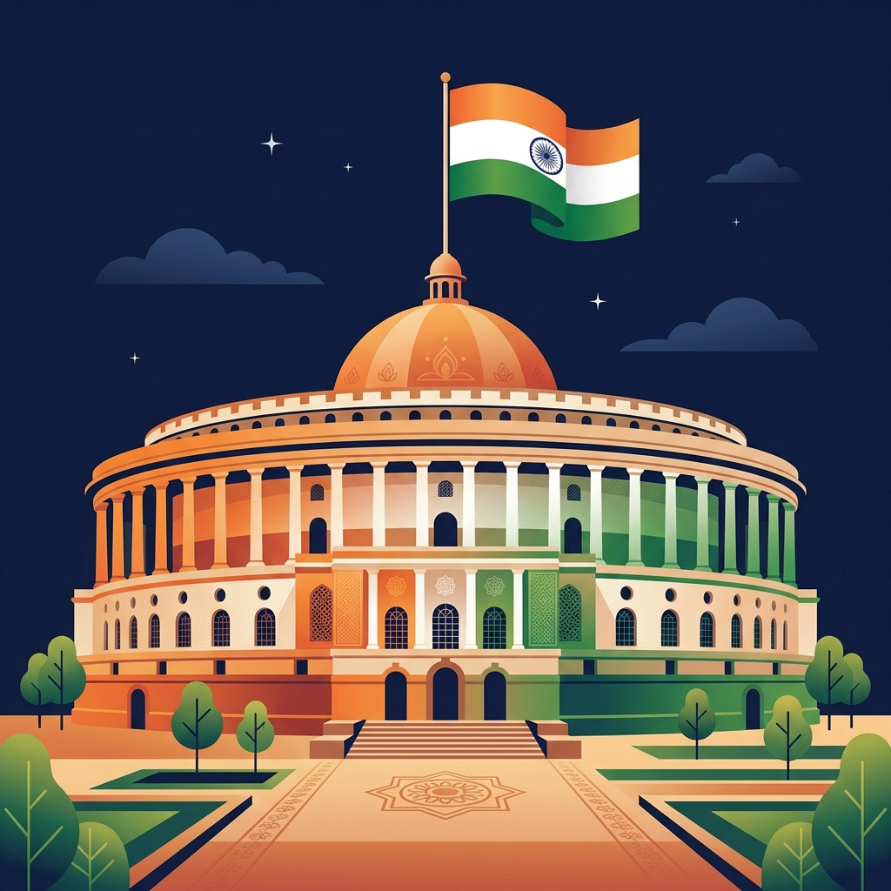
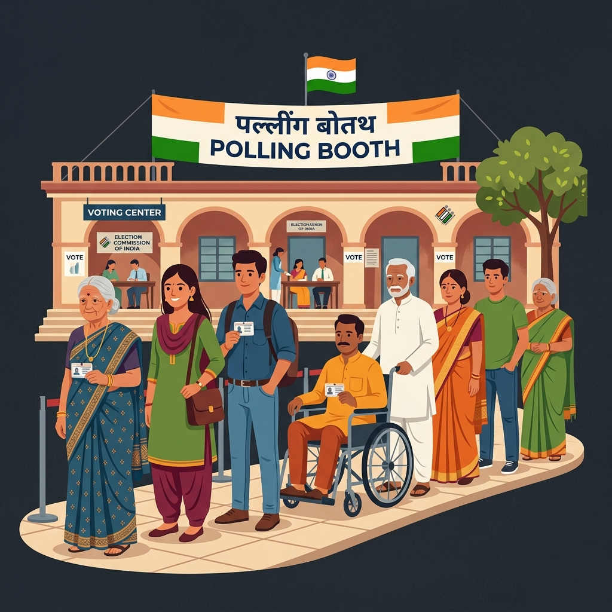
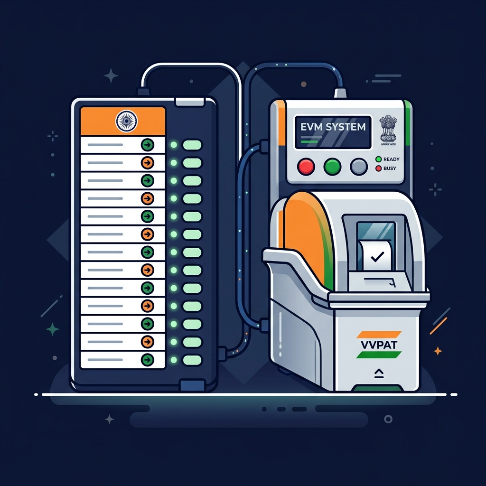

Your complete interactive guide to India's democratic process — from voter registration to results day. Know your rights, your role, and every step in between.
Understanding the levels of government and how your vote builds the nation from the grassroots up.
Head of Government. Formed by the majority party in Lok Sabha.
Directly elected to Lok Sabha. Represents a parliamentary constituency.
Head of State Government. Formed by the majority party in Vidhan Sabha.
Directly elected to Vidhan Sabha. Represents an assembly constituency.
India follows a parliamentary system with elections at national, state, and local levels — all overseen by the Election Commission of India (ECI).
543 members elected directly by citizens from constituencies across India. The party or coalition with majority forms the central government. Elections held every 5 years.
245 members — 233 elected by state legislatures using Single Transferable Vote, and 12 nominated by the President. Members serve 6-year terms, with one-third retiring every 2 years.
Each state has its own legislative assembly. Members (MLAs) are directly elected by citizens. The majority party forms the state government headed by the Chief Minister.
Panchayats (rural) and Municipal Corporations (urban) elections. These three-tier local governance bodies handle grassroots administration. Conducted by State Election Commissions.
An autonomous constitutional body that supervises elections. Headed by the Chief Election Commissioner and two Election Commissioners. Ensures free, fair, and impartial elections.
India uses the FPTP system — the candidate with the most votes in a constituency wins. No minimum vote share required. Simple, direct, and easy for voters to understand.
A general election unfolds across several weeks in carefully planned phases.
The ECI announces election dates, schedule, and the Model Code of Conduct (MCC) comes into effect immediately.
Candidates file their nomination papers along with an affidavit declaring assets, liabilities, criminal cases, and educational qualifications.
Parties and candidates campaign through rallies, door-to-door outreach, media, and social media. Campaigning must stop 48 hours before polling.
Voters cast their votes using Electronic Voting Machines (EVMs) with VVPAT verification. Polling happens in multiple phases across the country.
Votes are counted electronically. Results are declared constituency by constituency. The party with majority is invited to form the government.
The President invites the majority party/coalition leader to form government. The PM and Council of Ministers take oath of office.
Stay informed with the latest updates on current and upcoming elections across India.
Select your location to get tailored election news and voting instructions for your specific area.
From registration to casting your vote — here's everything you need to know.
Every Indian citizen aged 18+ must register to vote. Here's how:

Be ready before election day with these steps:

Here's exactly what happens at the polling station:
Your democratic duty doesn't end at the booth:
What happens behind the scenes to ensure a secure and transparent election.
EVMs are prepared, tested, and sealed in the presence of candidate representatives. Each machine is randomized to a polling station.
Polling stations are set up in schools, community halls, etc. CCTV cameras, webcasting, and micro-observers ensure transparency.
Central Armed Police Forces (CAPF) are deployed. Sensitive and critical booths get extra security. Flying squads patrol for violations.
Mock poll conducted before voting begins. Every vote is electronically recorded in the EVM and a paper trail is generated by VVPAT.
After polling ends, EVMs are sealed with unique serial numbers and stored in strong rooms under 24/7 CCTV surveillance and armed guard.
On counting day, EVMs are opened in the presence of agents. Round-by-round results are tallied. The winning candidate is declared by the Returning Officer.
Quick check to see if you meet the requirements to vote in Indian elections.
Common questions about the Indian election process.